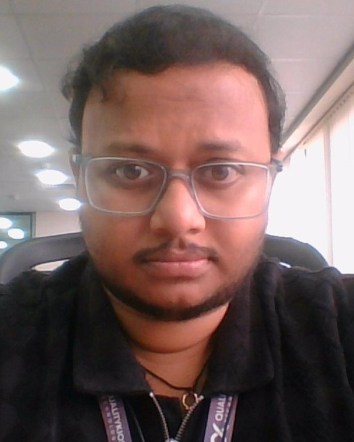

UI automation
Maintainable end-to-end tests with reliable locators, reusable page objects, session management, and cross-browser coverage.

Automating Quality.
Building Reliable Products.
QA Automation Engineer with 4+ years of experience specializing in UI and API automation using Playwright (JavaScript/TypeScript) and Selenium (Java). Passionate about quality, automation, and leveraging AI-assisted workflows to build scalable test solutions.
Choose a section to explore my skills, projects, and journey through an animated, interactive experience.
I combine practical automation engineering with a curiosity for AI-assisted testing. Explore the tabs above to see my technical toolkit, representative work, and experience.
Maintainable end-to-end tests with reliable locators, reusable page objects, session management, and cross-browser coverage.
Integration scenarios, request-context testing, and checks that complement the UI test suite.
Validate and debug generated automation scripts; keep human review and expected behavior at the center.
I'm a QA Automation Engineer based in Bengaluru, India, focused on building dependable automated checks and helping teams get faster, clearer feedback from testing.
I value readable automation, meaningful assertions, reusable patterns, and failure reports that help teams understand what went wrong.
Solving repetitive testing challenges, improving stability, learning new tools, and applying AI responsibly to engineering workflows.
Playwright UI/API automation, CI/CD reliability, and validating AI-assisted test-generation workflows.
A practical mix of UI/API automation, framework design, CI/CD, AI-assisted development, and agentic test workflows.
End-to-end workflows, locators, page objects, fixtures, session reuse, parallel execution, and cross-browser runs.
Test code, data-driven scenarios, request validation, and service integration checks.
Automated runs, failure diagnostics, reporting, and collaboration across the delivery lifecycle.
Run and validate agent outputs, troubleshoot generated scripts, and verify scenario behavior.
Functional, smoke, sanity, regression, exploratory testing, and defect investigation in Agile teams.
Retries, trace and screenshot review, test data management, and parallelization to improve feedback.
Selected work across UI/API automation, integration testing, and AI-assisted quality engineering. Confidential product details are intentionally kept high-level.
Work across Payment Exchange and CNS automation using Robot Framework with Python and Playwright with TypeScript. Evaluate outputs from AI Lens exploration, script-generation, and script-optimization agents; compare results with expected behavior, investigate failures, and document findings to help improve agent accuracy.
Built and expanded UI and API automation with 100+ UI scripts and 30+ API scripts. Prepared a client sanity suite and used GitHub Actions pipelines, Docker, GCP log analysis for debugging, and MongoDB for data validation.
Worked on full UI automation using Selenium with Java and owned automation for the Occupation Planning (OP) module, automating approximately 80+ test cases.
Worked on Snap-in integration automation using Playwright with TypeScript.
Explored a self-directed four-agent workflow for scenario discovery, scenario-to-test automation, flakiness detection, and self-healing. Agents share a knowledge base and use staged validation; human approval remains a guardrail for structural or high-impact changes.
Experience using Cursor AI and Claude AI to support coding, understanding generated scripts, troubleshooting, and refining automation workflows, with outputs reviewed and validated before use.
Experience across UI automation, API testing, framework maintenance, and AI-assisted test engineering.
QA automation across Playwright UI/API testing and CI/CD. Current project work includes validating and debugging outputs from exploration and script-generation agents.
Automation testing with Selenium WebDriver, Java, Cucumber BDD, Page Object Model, functional testing, and regression workflows.
Bachelor of Technology.
I'm interested in QA automation, Playwright, API testing, and AI-driven test engineering. Reach out to discuss opportunities and ideas.
Email is the best way to get in touch.
⌖ Bengaluru, Karnataka, India